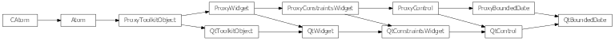
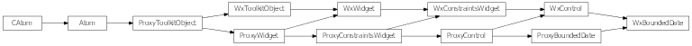

Bases: enaml.widgets.control.Control
A base class for components which edit a Python datetime.date object bounded between minimum and maximum values.
This class is not meant to be used directly.
The minimum date available in the date edit. If the minimum value is changed such that it becomes greater than the current value or the maximum value, then those values will be adjusted. The default value is September 14, 1752.
The maximum date available in the date edit. If the maximum value is changed such that it becomes smaller than the current value or the minimum value, then those values will be adjusted. The default value is December 31, 7999.
The date in the control. This will be clipped to the supplied maximum and minimum values. The default is date.today().
A reference to the ProxyBoundedDate object.

Bases: enaml.qt.qt_control.QtControl, enaml.widgets.bounded_date.ProxyBoundedDate
A base class for implementing Qt Enaml date widgets.
Return the current date in the control.
| Returns: | result (date) – The current control date as a date object. |
|---|
Set the widget’s minimum date.
| Parameters: | date (date) – The date object to use for setting the minimum date. |
|---|

Bases: enaml.wx.wx_control.WxControl, enaml.widgets.bounded_date.ProxyBoundedDate
A base class for use with Wx widgets implementing behavior for subclasses of BoundedDate.
An event handler to connect to the date changed signal of the underlying widget.
This will convert the wxDateTime to iso format and send the Enaml widget the ‘date_changed’ action.
Return the current date in the control.
| Returns: | result (date) – The current control date as a date object. |
|---|
Set the widget’s minimum date.
| Parameters: | date (date) – The date object to use for setting the minimum date. |
|---|